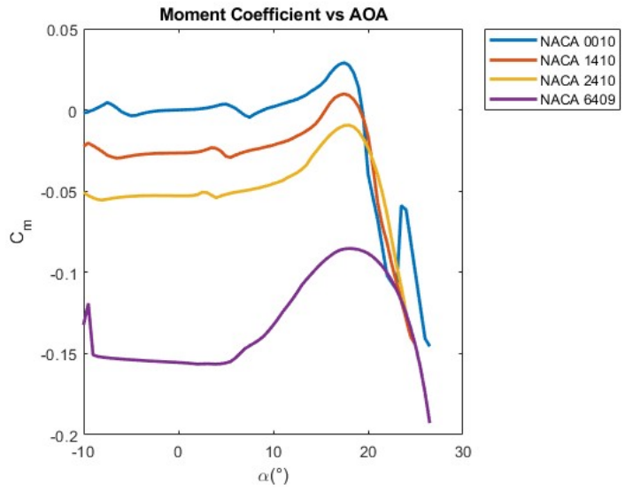
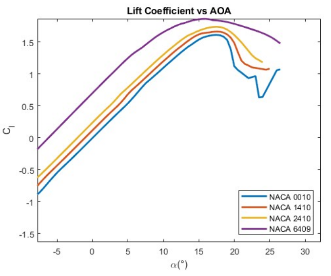

Incompressible Aerodynamics: Vortex Panel Project

Summary:
- UW Incompressible Aerodynamics Mentor: Dana Dabiri
In the Vortex Panel Mini-Project, aerodynamic characteristics of four airfoils (NACA 0010, NACA 1410, NACA 2410, and NACA 6409) were analyzed using MATLAB and XFOIL software, generating graphs for lift, drag, moment coefficients, and pressure distribution at different angles of attack.
1. Vortex Panel Mini Report: Here
Theory / Analysis
- Generated eight graphs for each airfoil at angles of attack (α) = 0°, 5°, 10°, illustrating lift coefficient, drag coefficient, moment coefficient, and pressure coefficient.
- \( C_D \): Drag coefficient
- \( C_L \): Lift coefficient
- \( C_M \): Moment coefficient
- \( C_p \): Pressure coefficient
- α: Angle of attack
- \( \frac{X}{C} \): x - location normalized to chord
In the Vortex Panel Mini-Project, I analyzed the aerodynamic characteristics of four NACA airfoils: NACA 0010, NACA 1410, NACA 2410, and NACA 6409. Reynolds number (Re) was set to 3,000,000 and Mach number (Ma) to 0.1 for consistency.
Graphs Generated:
Nomenclature:
Airfoil Characteristics
-
NACA 0010:
- Symmetric airfoil with lower camber. Shows sensitivity to changes in angle of attack (α). Suitable for high-speed applications due to low drag and good lift efficiency.
- Lift coefficient \( C_l \) versus α plot (fig:2-b) shows good lift with low drag, ideal for high-speed designs.
- Moment coefficient \( C_m \) versus α plot (fig:1-a) indicates higher sensitivity to α changes.
- Pressure coefficient \( C_p \) distribution (fig:3-1) is symmetric with high pressure near the leading edge.
- Smooth transition through stall with gradual lift degradation at high α.
- Optimal for applications requiring precise control and stability across varying speeds.
-
NACA 1410:
- Symmetric airfoil with higher lift coefficient than NACA 0010 but slightly higher drag. Offers stable lift behavior across α range.
- Cl versus α curve shows higher maximum lift coefficient than NACA 0010 but reaches stall at lower α.
- Lower peak Cp near leading edge compared to NACA 0010 (fig:3-b), indicating more gradual pressure distribution.
- Stable behavior at higher α with minimal lift degradation and moderate drag increase.
- Suitable for applications needing consistent lift performance over a wide range of angles.
-
NACA 2410:
- Lower camber airfoil with thin body, suitable for high-speed applications but with increased drag due to camber.
- Generates lower drag compared to cambered airfoils like NACA 6409, suitable for applications requiring higher speeds.
- Pressure distribution (fig:4-a) shows a slightly asymmetric Cp curve with rapid pressure gradient along the upper surface.
- Stable lift characteristics at moderate α with efficient performance in varying airspeeds.
- Ideal for designs where reduced drag and consistent performance across speed ranges are critical.
-
NACA 6409:
- Thick, cambered airfoil with high lift coefficient but also higher drag compared to NACA 0010 and NACA 1410.
- Highest maximum lift coefficient among the four airfoils, suitable for applications requiring high lift.
- Pressure distribution (fig:4-b) exhibits an asymmetric Cp curve with rapid pressure decrease along the upper surface, indicating strong pressure buildup near the leading edge.
- Significant increase in drag at higher α due to cambered design, limiting performance at extreme angles.
- Optimal for applications where maximizing lift outweighs considerations of drag, such as short take-off scenarios.
 verses the NACA 0010.png)
Fig. 3: (A) Graph of pressure coefficient (CP) versus x/c of the NACA 0010 airfoil.

Fig. 1: (A) Graph of moment coefficient versus angle of attack, showing the pitching moment of each airfoil.
 verses the NACA 1410.png)
Fig. 3: (B) Graph of pressure coefficient (CP) versus x/c of the NACA 1410 airfoil.

Fig. 1: (B) Graph of lift coefficient versus angle of attack, showing the lift coefficient of each airfoil.
 verses the NACA 2410.png)
Fig. 4: (A) Graph of pressure coefficient (CP) versus x/c of the NACA 2410 airfoil.

Fig. 2: (A) Graph of drag coefficient versus angle of attack, showing the drag coefficient of each airfoil.
 verses the NACA 6409.png)
Fig. 4: (B) Graph of pressure coefficient (CP) versus x/c of the NACA 6409 airfoil.

Fig. 2: (B) Graph of lift coefficient versus drag coefficient, showing the lift-to-drag ratio of each airfoil.
Conclusion
- The analysis of NACA airfoils—NACA 0010, NACA 1410, NACA 2410, and NACA 6409—reveals distinct aerodynamic characteristics crucial for aerospace design.
- NACA 0010: Symmetric profile with low drag, ideal for high-speed applications needing efficient lift.
- NACA 1410: Offers higher lift coefficients but with increased drag, maintaining stable performance across various angles of attack.
- NACA 2410: Balances speed and stability with lower drag, suitable for consistent performance in varying airspeeds.
- NACA 6409: Maximizes lift but exhibits higher drag, suitable for scenarios prioritizing lift over drag considerations.
- Understanding these profiles is crucial for designing aerospace components tailored to specific operational requirements.
- Optimal performance across different flight conditions can be achieved by leveraging the unique aerodynamic traits of each airfoil.